Week 5: Intro to ggplot
This week I will give an introduction to plotting with the ggplot2 package. Getting a basic familiarity with ggplot2 will really save you a lot of time that you spend futzing with plots.
This is oriented to those with little or no experience using ggplot2 or those who have tried it and gotten frustrated. If you already use ggplot2, you won’t find this session very interesting. The goal of this session is to get you started. Once you have the basics, there are a gazillion ggplot tutorials online (though personally the basics are all I need).
You can clone my Week 5 repository or open the respository in R Studio Cloud and work from there. Once in either place, open week5-ggplot2.Rmd and click the Knit button.
If you are working on your own computer, you will need to install the ggplot2 and gridExtra packages.
library(ggplot2)
library(gridExtra)Basic xy plot
Workflow
Let’s say you wanted to make a simple xy plot with plot(). Here’s your workflow.
- Decide on
xor use the default (1 to the number of data points). - Decide on
y. - Plot with
plot(x,y)
val <- mtcars$mpg
x <- mtcars$hp
plot(x, val, type="p")
Here’s your ggplot() workflow.
- Decide on
xor use the default (1 to the number of data points). - Decide on
y. - Make a data frame with
xandy. - Create the plot object with a call to
ggplot()to tell it the data frame and then what thexandyto use. The latter is withaes()(aesthestics). - Add points or lines to the plot with
geom_line()orgeom_point().
df <- data.frame(x=mtcars$hp, val=mtcars$mpg)
p1 <- ggplot(df, aes(x=x, y=val)) #set up data and x and y
p2 <- p1 + geom_point() # Tell it what to do with that (add a line)
p2 # plot it
Typically you’d just write the call like so
ggplot(df, aes(x=x, y=val)) + geom_point()But I assigned the calls to objects p1 and p2 so you can see that both are ggplot objects.
class(p1)## [1] "gg" "ggplot"class(p2)## [1] "gg" "ggplot"That feature is going to be super helpful because it means you can easily add elements to a ggplot without worrying about y axis limits or figure sizing.
p2 + geom_line()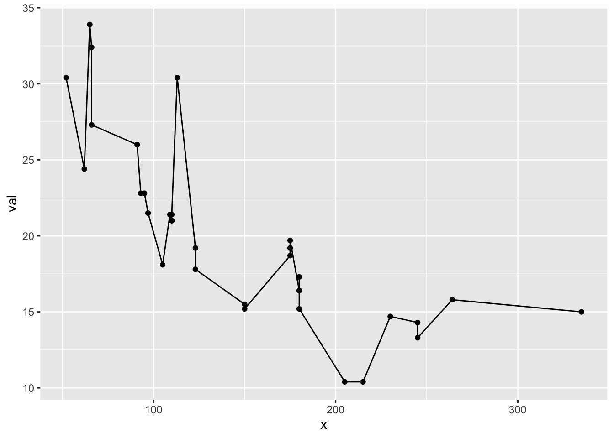
Modifying your plot
Points and lines
With plot(), you alter the points and lines with arguments passed to plot().
pch(point type),lty(linetype),type(“l”, “b”, “p”),lwd(line width),cex(point size)
plot(x, val, type="b", lwd=2, lty=2,
pch=21, col="red", cex=4, bg="blue")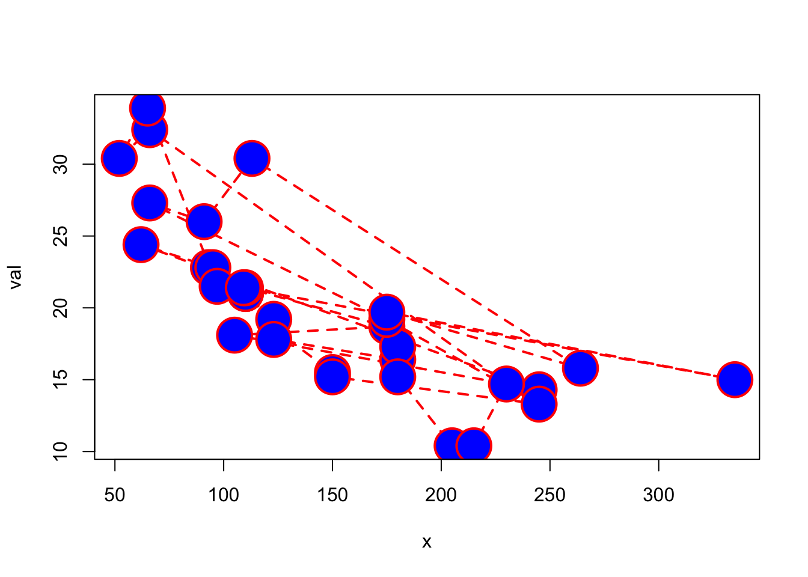
With ggplot(), the approach is quite different and the names are mostly totally different. A cheatsheet of things you commonly use will be helpful when start (I still use one).
There are two different workflows that you need to decide on.
- Dynamic colors etc: Let
ggplot()pick your colors, points, line widths etc. - Fixed colors etc: Manually choose your colors, points, line widths etc, aka use a fixed value.
Gravitating to option 1 will make your life with ggplot() easier, but let’s start with option 2.
 Fixed lines, points attributes go outside of
Fixed lines, points attributes go outside of aes() in a geom_...() call. Dynamic attributes go inside of aes().
Look at ?geom_point to see the attributes that you can pass in.
ggplot(df, aes(x=x, y=val)) + geom_point(col="blue")
The length of the fixed attribute must be 1 or the length of the data.
ggplot(df, aes(x=x, y=val)) +
geom_point(shape=21, col="blue", fill=mtcars$carb, size=6, alpha=.5, stroke=2)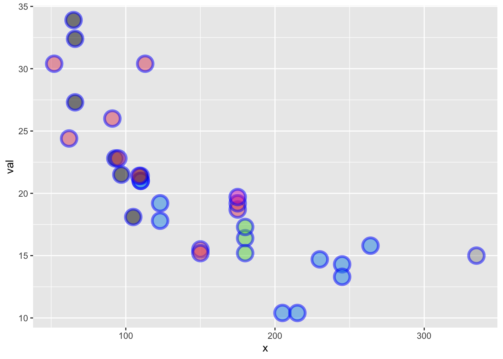
Ways to set attributes that won’t work as you think:
Putting color outside of aes() in ggplot() does nothing. ggplot() sets up the data to use, but information outside aes() doesn’t flow to the plotting functions like geom_point().
ggplot(df, aes(x=x, y=val), col="blue") + geom_point()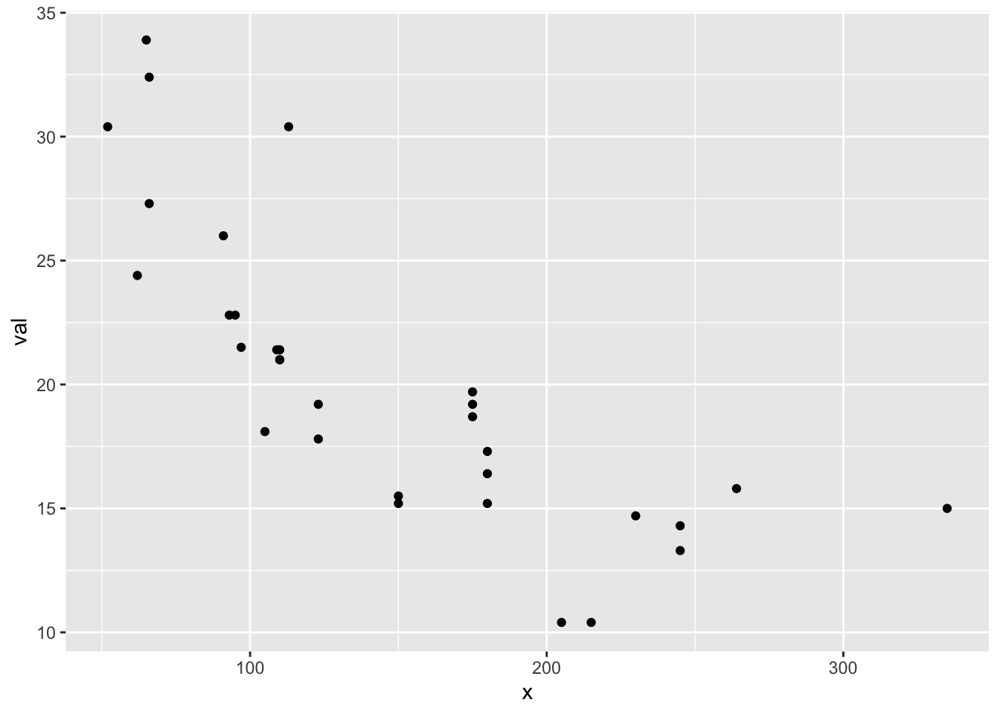
Putting color inside of aes() in ggplot() has a non-intuitive effect. Plot attributes, like color, in aes() are converted to factors and the colors (etc) will be choosen dynamically. The name “blue” is not a color is the a factor and ggplot() gives the first factor the color red in this case. Information in aes() will flow to the rest of the plot unless you tell the geom_point() otherwise).
ggplot(df, aes(x=x, y=val, color="blue")) + geom_point()
How do we tell geom_point() not to use the color value in aes() in ggplot()? Tell it to use a fixed value by putting col="blue" outside of an aes() call in geom_point().
ggplot(df, aes(x=x, y=val)) + geom_point(col="blue")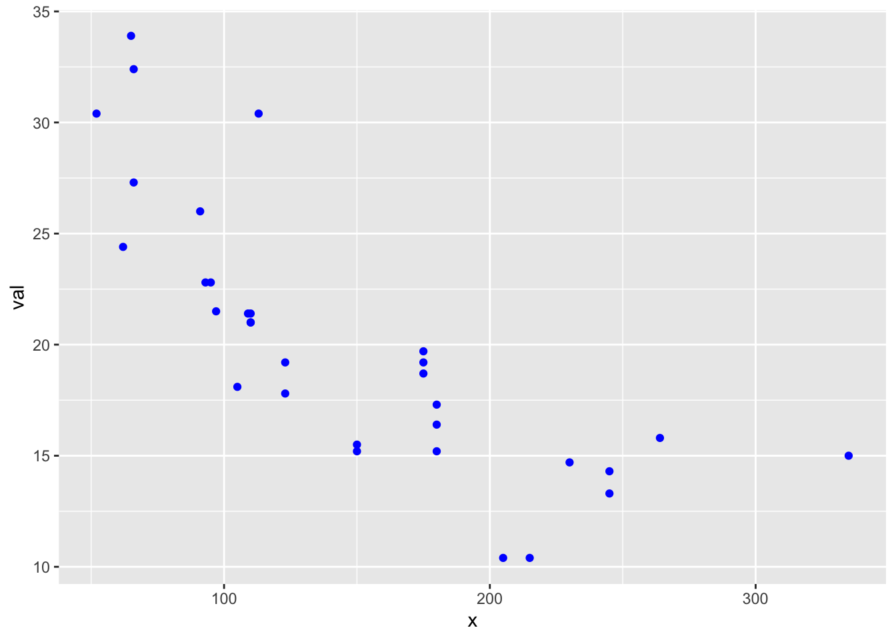
What happens if we put the color in aes() in geom_point()?
ggplot(df, aes(x=x, y=val)) + geom_point(aes(color="blue"))
Let’s make a plot with big red points and a thick blue line.
p1 <- ggplot(df, aes(x=x, y=val)) +
geom_line(col="blue", size=2) +
geom_point(col="red", size=3)
p1
Let’s add a column plot to that. I pass in alpha to add some transparency to the columns so they don’t wipe out the line.
p1 + geom_col(alpha=0.5, position="dodge")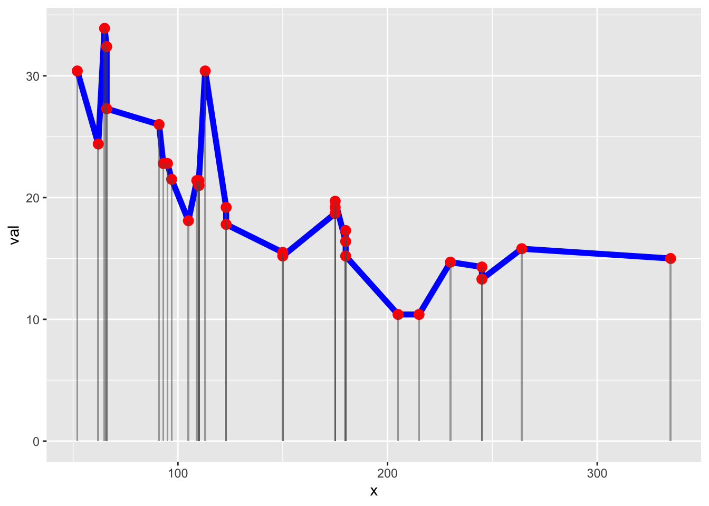
Labels and limits
With plot(), you alter the labels and limits with arguments passed to plot().
xlabandylab(labels),mail(title),ylimandxlim(limits)
plot(x, val, type="p", xlab="time", ylab="value",
xlim=c(100,200), ylim=c(0,40), main="plot plot")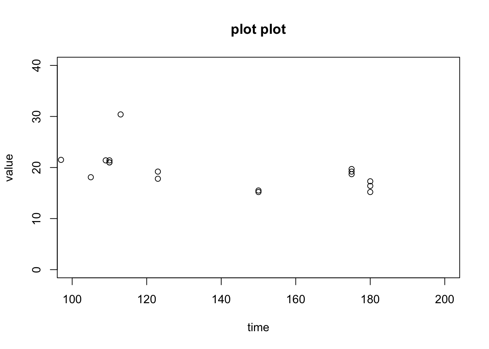
With ggplot, it’s pretty similar but you use functions. Ignore the NA warning. I’ll show how to stop that later. ggplot likes to gives warnings about things that it knows how to deal with.
ggplot(df, aes(x=x, y=val)) +
geom_point() +
xlab("time") + ylab("value") +
ggtitle("ggplot plot") +
xlim(c(100,200)) + ylim(c(0,40))## Warning: Removed 16 rows containing missing values (geom_point).
Changing the whole look
ggplot uses themes to set the look of your plot and you can change the whole look by setting a different theme. You can also just tweak one element of the plot’s existing theme. Note because we fixed the line and point colors, we override some theme elements (eg, line colors). See ?theme_bw to see all the themes. See ?theme to learn how to change one element of your plot design.
p1 + theme_classic()
Adding lines or points
Let’s say you want to plot 2 lines.
Workflow
In plot() your workflow is
- Define
x1andx2(if different) - Define
y1andy2 - Plot
y1with limits adjusted for the data we are adding. - Add
y2to the plot.
val2 <- val+10
plot(x, val, ylim=c(0,50))
lines(x[order(x)], val2[order(x)])
In ggplot() you have two possible workflows. First one could be like the plot() workflow. This will cause you problems if you later want to arrange these data into separate plots, but lets go ahead and do this. Sometimes this is the easiest way to get done what you need to do.
- Define
x1andx2(if different) - Define
y1andy2 - Make data frames
dfanddf2for both. - Set up the plot with
ggplot()anddf - Add points with
geom_point() - Add
df2usinggeom_line()withdf2passed in andaes()call.
How aes() is working. aes() information is flowing rightward. Everything to the right will inherit the data frame and aes() info in ggplot() unless you specifiy new data or new aes() (or use inherit.aes=FALSE).
df2 <- data.frame(x=x, val2=val+10)
ggplot(data=df, aes(x=x, y=val)) +
geom_point() +
geom_line(data=df2, aes(x=x, y=val2))
This inheriting feature is usually very handy, but when working with multiple data frames, it is often clearer if you keep the data and aes() with the points and lines. Note since there is no data or aes() specified in ggplot() , there is no inheriting of data.
ggplot() +
geom_point(data=df, aes(x=x, y=val)) +
geom_line(data=df2, aes(x=x, y=val2))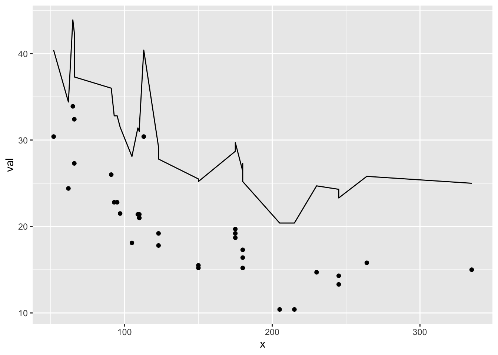
The lack of data and aesthetics in ggplot() means that this code will throw an error. geom_line() has data but no aesthetics because it can’t inherit that from ggplot().
ggplot() +
geom_point(data=df, aes(x=x, y=val)) +
geom_line(data=df2)## Error: geom_line requires the following missing aesthetics: x and yHere is another example of plotting data from two different data frames:
ggplot() +
geom_line(data=iris, aes(x = Sepal.Length, y=Petal.Length)) +
geom_bar(data=mtcars, aes(x=cyl), alpha=0.3) +
ylab("y") + xlab("x")
Adding a legend
ggplot makes it rather hard to modify your legend if you create a plot this way. Creating a manual legend, as opposed to dynamically as ggplot is supposed to work, can be quite hacky. First thing to know is that the color, linestyle, and/or shape must be in aes() to appear in the legend. If it’s not there you can’t control it in the legend.
Note: What I am about to show is really hacky and not the way ggplot is intended to be used, but it comes up so often for new ggplot users that I want you to see a solution so you don’t give up on ggplot because of legends. Jump ahead to the correct ggplot workflow with long-form data frames to see how to avoid this.
This works. Ignore the warning about unknown aesthetics.
ggplot() +
geom_point(data=df, aes(x=x, y=val, col="df", linetype="df")) +
geom_line(data=df2, aes(x=x, y=val2, col="df2", linetype="df2")) +
scale_color_manual("name", values=c("blue", "black")) +
scale_linetype_manual("name",values=c(0,1))## Warning: Ignoring unknown aesthetics: linetype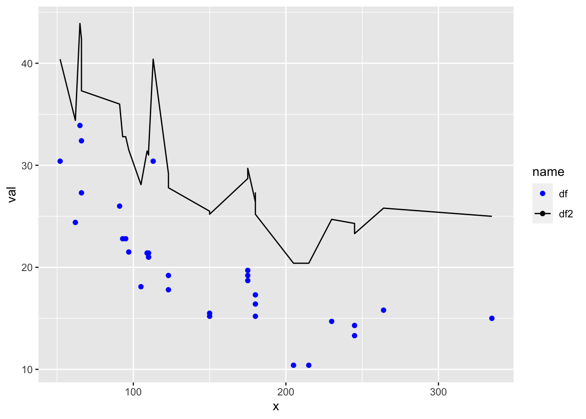
Better ggplot workflow
This is how ggplot() is intended to be used
- Make data frames with
dfanddf2data and a “name” column. - Set up the plot with
ggplot() - Make points or line different using the “name” column
df1 <- data.frame(x=x, val=val, name="df1")
df2 <- data.frame(x=x, val=val+10, name="df2")
df3 <- rbind(df1, df2)
ggplot(df3, aes(x=x, y=val, col=name, shape=name)) +
geom_line() +
geom_point()
Notes
- If the color, shape, linetype is not in an
aes()it won’t appear in the legend. - If the color, shape, or linetype is in an
aes()it will appear in the legend. aes()info inggplot()flows to the other elements. Put theaes()info in the individualgeom_...()calls if you don’t want that. Useinherit.aes=FALSEto stop this inheriting behavior.- Want to mix points and lines? You need to use
scale_..._manual()to manually turn-off points or lines for some of the data. - You can always force colors, shapes, linetypes by passing in color, shape, size etc outside of
aes()but it won’t appear in the legend. Only colors, shapes, etc, that appear inaes()will appear in a legend.
Example, points are all black since the aes(col=name) only appears in the geom_line() call.
ggplot(df3, aes(x=x, y=val)) +
geom_line(aes(col=name)) +
geom_point(aes(shape=name))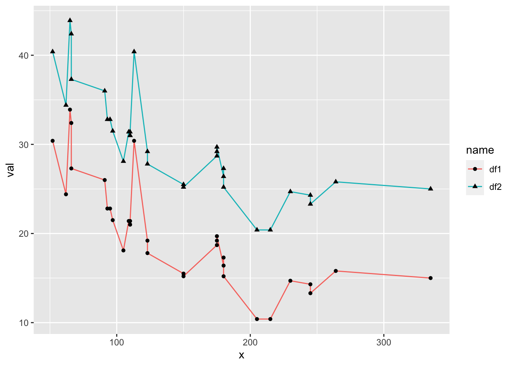
Modifying the legend
You can control all aspects of the legend. Read up on it here.
Manually changing data points and other lines will require scale_...() and gets hacky.
ggplot(df3, aes(x=x, y=val)) +
geom_line(aes(col=name, linetype=name)) +
geom_point(aes(shape=name)) +
scale_color_manual("name", values=c("blue", "black")) +
scale_shape_manual("name",values=c(NA,1)) +
scale_linetype_manual("name",values=c(1,0))## Warning: Removed 32 rows containing missing values (geom_point).
NA warnings
Ack all those NA warnings!
df4 <- data.frame(x=1:10, y=c(1,NA,NA,4:10), name=rep(c("a","b"),5))
ggplot(df4, aes(x=x, y=y, col=name)) +
geom_point()## Warning: Removed 2 rows containing missing values (geom_point).
Get rid of them using na.rm=TRUE.
ggplot(df4, aes(x=x, y=y, col=name)) +
geom_point(na.rm=TRUE)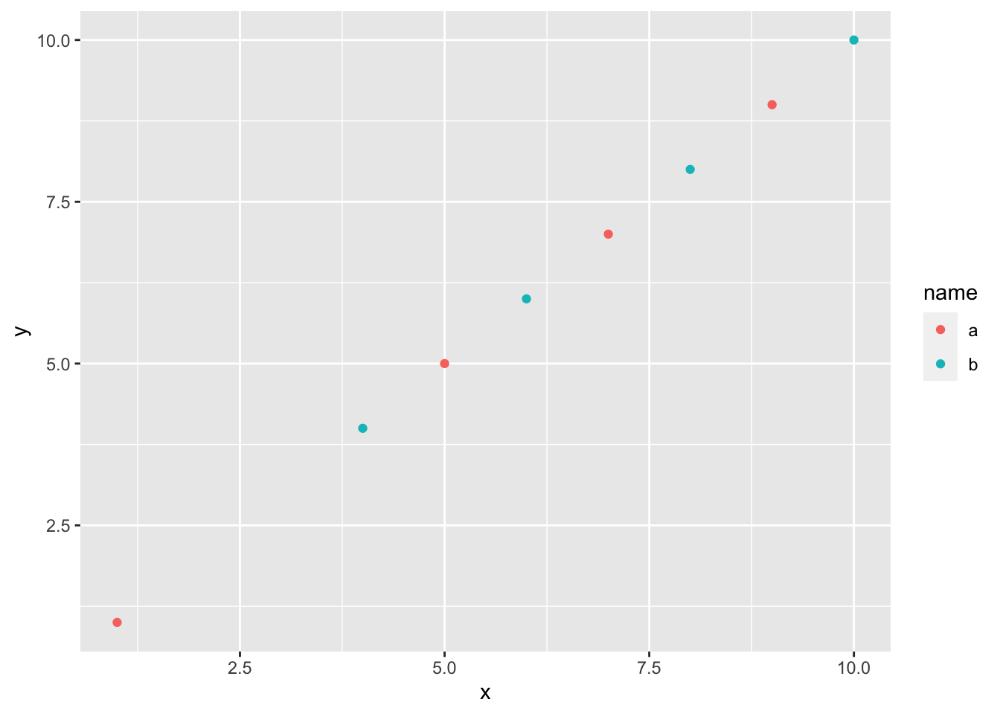
Arranging plots into grids
Manually
Let’s do a 4x4 grid of plots with plot().
par(mfrow=c(2,2))
t <- 1:10
val <- rnorm(10)
plot(t, val, type="b")
plot(t, val+100, type="l")
plot(t, 100*val, type="p")
barplot(1:4, 1:4, type="b")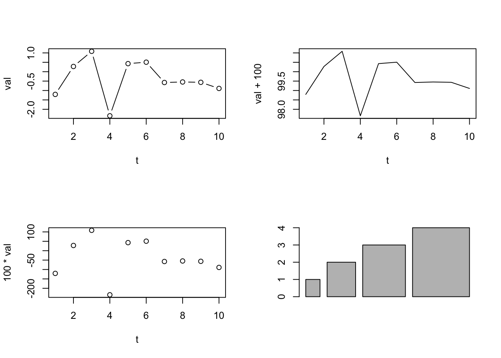
Now let’s do this in with ggplot() in a similar workflow. The difference with ggplot() is that we save the plots and then arrange them into a grid with gridExtra::grid.arrange() (from the gridExtra package).
UPDATE Instead of gridExtra and grid.arrange(), check out the patchwork package. It does similar jobs as grid.arrange() but is better.
Let’s do a 4x4 grid of plots with plot().
library(gridExtra)
df <- data.frame(t = 1:10, val = rnorm(10))
p1 <- ggplot(df, aes(x=t, y=val)) + geom_line() + geom_point()
p2 <- ggplot(df, aes(x=t, y=val+100)) + geom_line()
p3 <- ggplot(df, aes(x=t, y=100*val)) + geom_point()
df2 <- data.frame(t = 1:4, val = 1:4, se=.1*(1:4))
p4 <- ggplot(df2, aes(x=t, y=val)) + geom_col()
gridExtra::grid.arrange(p1, p2, p3, p4)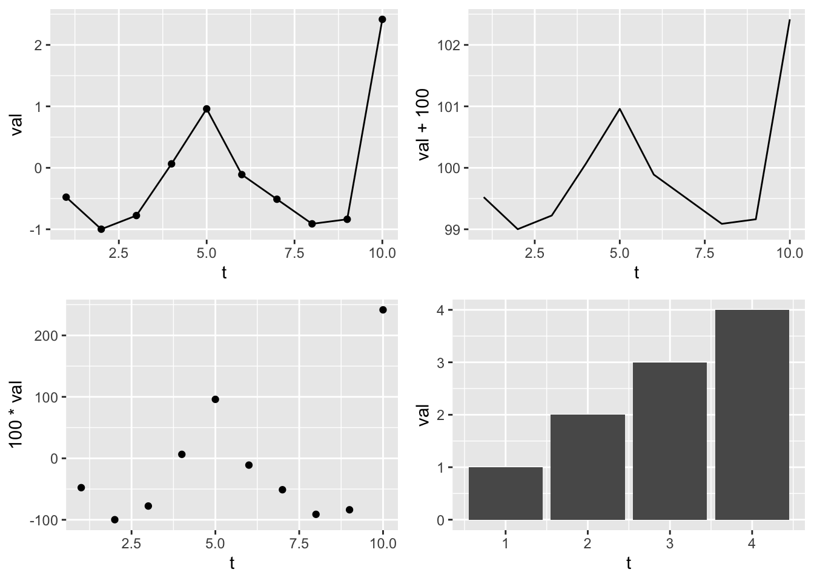
Let’s do two plots in one column but add new info to plot 1.
gridExtra::grid.arrange(p1+geom_smooth(method="lm"),
p4+geom_errorbar(aes(ymin=val-se, ymax=val+se), width=0.3), ncol=1)## `geom_smooth()` using formula 'y ~ x'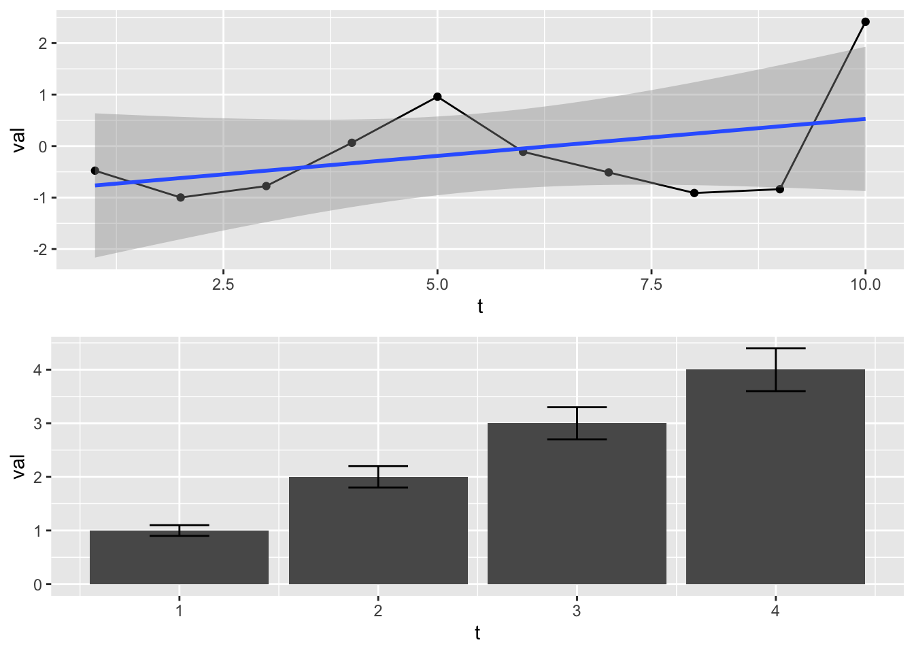
When you don’t know how many plots you’ll be arranging. There are many situations where you are building a group of plots into a list and you don’t know how big that list will be (because the data flowing to your plot code changes). You can assemble ggplot objects into a list and pass that to grid.arrange().
df <- data.frame(t = 1:10, val = rnorm(10))
plist <- list()
n <- 3
for(i in 1:n) plist[[i]] <- ggplot(df, aes(x=t, y=val)) + geom_line() + geom_point()
df2 <- data.frame(t = 1:4, val = 1:4, se=.1*(1:4))
plist[[n+1]] <- ggplot(df2, aes(x=t, y=val)) + geom_col()
gridExtra::grid.arrange(grobs=plist)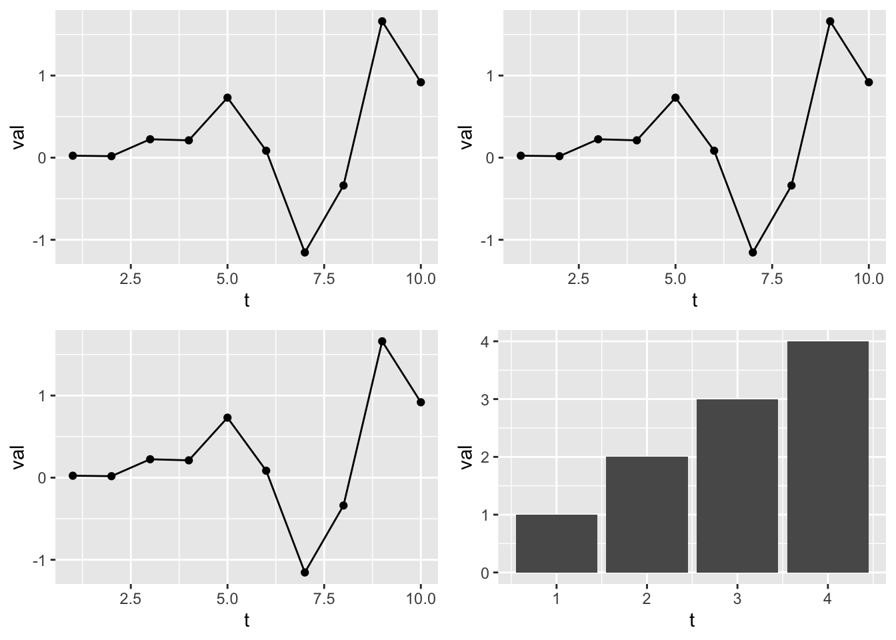
The patchwork package gives you the same functionality.
patchwork::wrap_plots(plist)Dynamically
ggplot() will also dynamically break your data into plots for you.
df1 <- data.frame(t=t, val=val, name="df1")
df2 <- data.frame(t=t, val=val+1, name="df2")
df <- rbind(df1, df2)
p1 <- ggplot(df, aes(x=t, y=val, col=name)) + geom_line()
p1
p1 + facet_wrap(~name)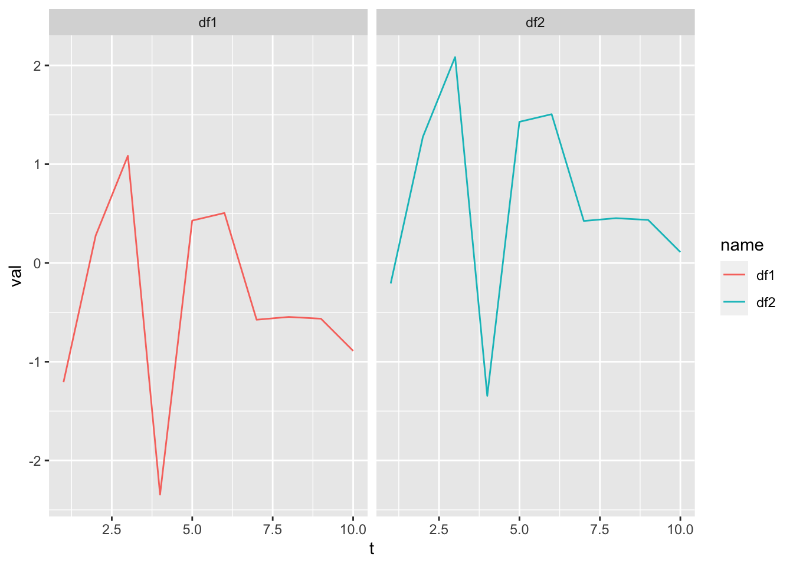
head(mpg)## # A tibble: 6 x 11
## manufacturer model displ year cyl trans drv cty hwy fl class
## <chr> <chr> <dbl> <int> <int> <chr> <chr> <int> <int> <chr> <chr>
## 1 audi a4 1.8 1999 4 auto(l5) f 18 29 p compa…
## 2 audi a4 1.8 1999 4 manual(m5) f 21 29 p compa…
## 3 audi a4 2 2008 4 manual(m6) f 20 31 p compa…
## 4 audi a4 2 2008 4 auto(av) f 21 30 p compa…
## 5 audi a4 2.8 1999 6 auto(l5) f 16 26 p compa…
## 6 audi a4 2.8 1999 6 manual(m5) f 18 26 p compa…Let’s plot city mpg versus number of cylinders.
pc <- ggplot(mpg, aes(x=cyl, y=cty)) + geom_point()
pc
Now we can divide this up by different factors in our the mpg data frame.
pc + facet_wrap(~class)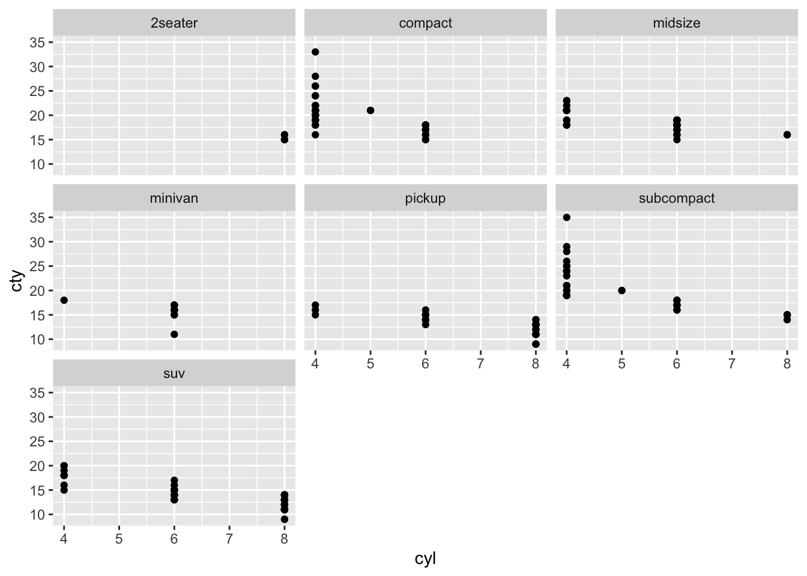
We can add some things to our plot and free the scales.
pc + facet_wrap(~class, scales="free") + geom_smooth(method="lm")## `geom_smooth()` using formula 'y ~ x'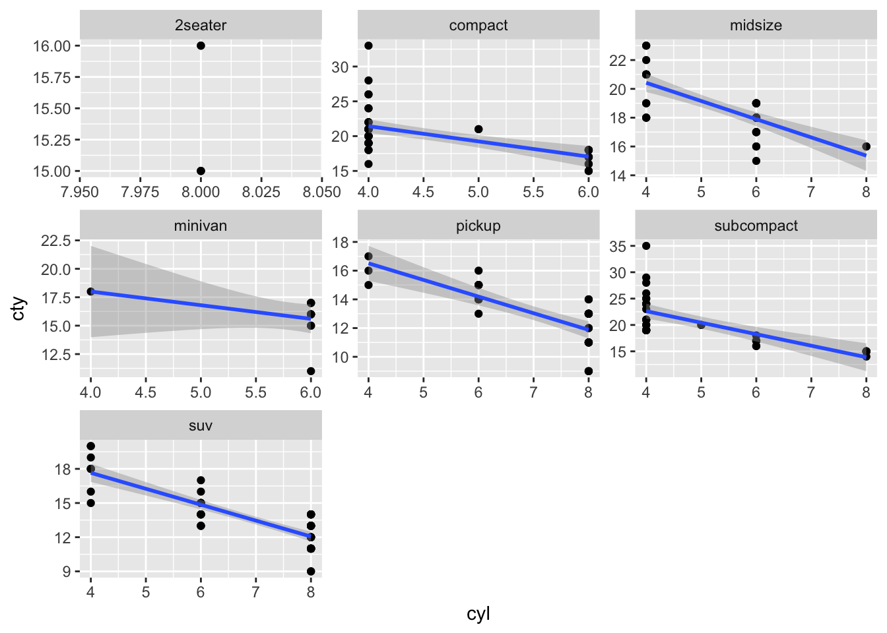
Another nice feature is that we can combine these wrapped figures into a grid because they are ggplot objects. Making this plot in base R would take you forever and another 2 forever is you wanted to change it around or if the number of classes in your data changed.
pf <- pc + facet_wrap(~class)
grid.arrange( p1, pf, ncol=2)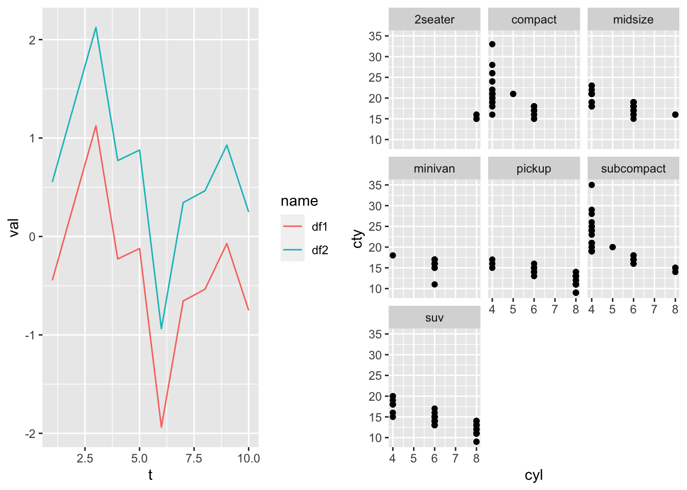
And I can add features to the plots right in the grid.arrange() call.
pf <- pc + facet_wrap(~class)
grid.arrange(
p1+ggtitle("All the classes"),
pf+theme_bw()+ylab("City mpg"),
ncol=2)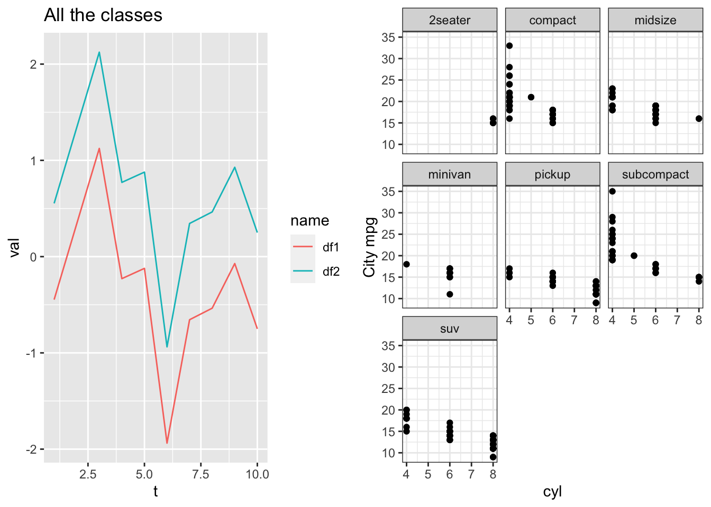
Notes
facet_wrap()often balks if you use different data frames in your plot construction, i.e. you doing something kind of hacky.- needs a column in your data frame factors (or characters it can coerce into factors). Might work with multiple data frames in your plot as long as each data frame has the same “name” column.
- wants all the data frame to be the same length. This is only when you use different data frames. Fine if you have all data in one data frame.
Creating plot templates
If you are creating plots with the same features over and over, you can hold the features in a list and add that on to your plot.
Example where I want all my plots to have red points and a regression line:
p3 <- geom_point(col="red")
p2 <- geom_smooth(method="lm")
p4 <- xlab("MPG")
p5 <- ylab("HP")
# pt is my template
pt <- list(p2, p3, p4, p5)
p1 <- ggplot(mtcars, aes(x=mpg, y=hp)) + pt
p2 <- ggplot(mpg, aes(x=hwy,y=cyl)) + pt
grid.arrange(p1, p2)## `geom_smooth()` using formula 'y ~ x'
## `geom_smooth()` using formula 'y ~ x'
Summary
ggplot can make your plotting workflow more efficient and much much faster. No more hassling with layouts. It takes a little while to get the hang of, but you do not need to be a ggplot wizard. Just the basics here will take you a long way. Google will answer any other questions that you have.
A good set of basic ggplot commands when you are starting:
ggplotgeom_line()geom_point()geom_col()ggtitle(),xlab(),ylab(),xlim(),ylim()- Themes. Use
?theme_bwto see them. gridExtra::grid.arrange(..., nrow, ncol)facet_wrap()- Changing the color, line, and points manually is a bit painful, but often unavoidable. Get to know the
scale_xyz_manual()functions when you need to do that.?scale_color_manualto find them all.
ggplot’s main downside for me is the lack of a manual legend function like plot()’s legend() and the amount of work needed to customize legends. But this is made up for in ggplot’s other great features.